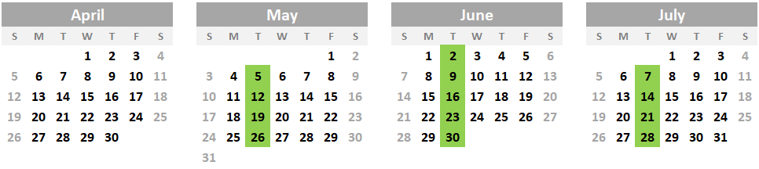

|
|
Week 11 Results
Updated: 7/24/2020
Accolades
- Butch Beyer from Barrels of Fun with a 25 straight!
- Loren Lamar from Missed Again with a 25 straight!
Standings (Week 11)
| Standing | Team | Captain | Targets | Total Targets | Rank Points | Bonus Points | Total Points |
|---|---|---|---|---|---|---|---|
| 1 | Missed Again | Ben Dittmar | 194 | 2145 | 23 | 5 | 316 |
| 2 | Sights Impaired | Michael Freimann | 197 | 2114 | 28 | 5 | 316 |
| 3 | Barrels of Fun | Cindy Grimsley | 196 | 2064 | 26 | 5 | 302 |
| 4 | Full Choke Artists | Jeff Abel | 194 | 2034 | 23 | 5 | 282 |
| 5 | Bullshooters | Greg Litchfield | 200 | 2004 | 30 | 5 | 281 |
| 6 | Shell Shocked | Troy Johns | 186 | 2015 | 20 | 0 | 278 |
| 7 | Shockers | Logan McKenna | 173 | 1995 | 18 | 0 | 270 |
| 8 | Smoking Guns | Gordon Larsen | 168 | 1906 | 16 | 5 | 234 |
| 9 | Powderburners | Jamie Spencer | 158 | 1812 | 14 | 5 | 222 |
Week 10 Results
Updated: 7/16/2020
Accolades
- Loren Lamar from Missed Again with a 25 straight!
- Ron Milby from Sights Impaired with a 25 straight!
Standings (Week 10)
| Standing | Team | Captain | Targets | Total Targets | Rank Points | Bonus Points | Total Points |
|---|---|---|---|---|---|---|---|
| 1 | Missed Again | Ben Dittmar | 211 | 1951 | 30 | 5 | 288 |
| 2 | Sights Impaired | Michael Freimann | 198 | 1917 | 26 | 5 | 283 |
| 3 | Barrels of Fun | Cindy Grimsley | 204 | 1868 | 28 | 5 | 271 |
| 4 | Shell Shocked | Troy Johns | 194 | 1829 | 20 | 6 | 258 |
| 5 | Full Choke Artists | Jeff Abel | 192 | 1840 | 18 | 5 | 254 |
| 6 | Shockers | Logan McKenna | 197 | 1822 | 24 | 5 | 252 |
| 7 | Bullshooters | Greg Litchfield | 196 | 1804 | 22 | 5 | 246 |
| 8 | Smoking Guns | Gordon Larsen | 182 | 1738 | 16 | 5 | 213 |
| 9 | Powderburners | Jamie Spencer | 174 | 1654 | 14 | 0 | 203 |
Week 9 Results
Updated: 7/8/2020
Standings (Week 9)
| Standing | Team | Captain | Targets | Total Targets | Rank Points | Bonus Points | Total Points |
|---|---|---|---|---|---|---|---|
| 1 | Missed Again | Ben Dittmar | 197 | 1740 | 30 | 0 | 253 |
| 2 | Sights Impaired | Michael Freimann | 185 | 1719 | 21 | 5 | 252 |
| 3 | Barrels of Fun | Cindy Grimsley | 185 | 1664 | 21 | 5 | 238 |
| 4 | Shell Shocked | Troy Johns | 190 | 1635 | 24 | 6 | 232 |
| 5 | Full Choke Artists | Jeff Abel | 195 | 1648 | 28 | 5 | 231 |
| 6 | Shockers | Logan McKenna | 191 | 1625 | 26 | 5 | 223 |
| 7 | Bullshooters | Greg Litchfield | 181 | 1608 | 18 | 7 | 219 |
| 8 | Smoking Guns | Gordon Larsen | 141 | 1556 | 14 | 0 | 192 |
| 9 | Powderburners | Jamie Spencer | 154 | 1480 | 16 | 0 | 189 |
Week 8 Results
Updated: 7/2/2020
Accolades
- John Karl from Missed Again with a 25 straight!
Standings (Week 8)
| Standing | Team | Captain | Targets | Total Targets | Rank Points | Bonus Points | Total Points |
|---|---|---|---|---|---|---|---|
| 1 | Sights Impaired | Michael Freimann | 196 | 1534 | 28 | 0 | 226 |
| 2 | Missed Again | Ben Dittmar | 192 | 1543 | 26 | 0 | 223 |
| 3 | Barrels of Fun | Cindy Grimsley | 188 | 1479 | 23 | 5 | 212 |
| 4 | Shell Shocked | Troy Johns | 197 | 1445 | 30 | 6 | 202 |
| 5 | Full Choke Artists | Jeff Abel | 188 | 1453 | 23 | 0 | 198 |
| 6 | Bullshooters | Greg Litchfield | 188 | 1427 | 23 | 5 | 194 |
| 7 | Shockers | Logan McKenna | 186 | 1434 | 18 | 5 | 192 |
| 8 | Smoking Guns | Gordon Larsen | 163 | 1415 | 16 | 0 | 178 |
| 9 | Powderburners | Jamie Spencer | 159 | 1326 | 14 | 5 | 173 |
Week 7 Results
Updated: 6/24/2020
Accolades
- Anthony Schultz from Shockers with a 25 straight!
Standings (Week 7)
| Standing | Team | Captain | Targets | Total Targets | Rank Points | Bonus Points | Total Points |
|---|---|---|---|---|---|---|---|
| 1 | Sights Impaired | Michael Freimann | 209 | 1338 | 30 | 5 | 198 |
| 2 | Missed Again | Ben Dittmar | 200 | 1351 | 26 | 5 | 197 |
| 3 | Barrels of Fun | Cindy Grimsley | 162 | 1291 | 16 | 0 | 184 |
| 4 | Full Choke Artists | Jeff Abel | 207 | 1265 | 28 | 6 | 175 |
| 5 | Shockers | Logan McKenna | 183 | 1248 | 24 | 0 | 169 |
| 6 | Shell Shocked | Troy Johns | 165 | 1248 | 18 | 1 | 166 |
| 7 | Bullshooters | Greg Litchfield | 171 | 1239 | 20 | 1 | 166 |
| 8 | Smoking Guns | Gordon Larsen | 161 | 1252 | 14 | 0 | 162 |
| 9 | Powderburners | Jamie Spencer | 179 | 1167 | 22 | 5 | 154 |
Week 6 Results
Updated: 6/17/2020
Accolades
- Derri Kerrick from Shockers with a 25 straight!
Standings (Week 6)
| Standing | Team | Captain | Targets | Total Targets | Rank Points | Bonus Points | Total Points |
|---|---|---|---|---|---|---|---|
| 1 | Barrels of Fun | Cindy Grimsley | 205 | 1129 | 30 | 5 | 168 |
| 2 | Missed Again | Ben Dittmar | 186 | 1151 | 16 | 0 | 166 |
| 3 | Sights Impaired | Michael Freimann | 187 | 1129 | 18 | 0 | 163 |
| 4 | Smoking Guns | Gordon Larsen | 193 | 1091 | 24 | 5 | 148 |
| 5 | Shell Shocked | Troy Johns | 192 | 1083 | 21 | 6 | 147 |
| 6 | Bullshooters | Greg Litchfield | 201 | 1068 | 28 | 5 | 145 |
| 7 | Shockers | Logan McKenna | 195 | 1065 | 26 | 6 | 145 |
| 8 | Full Choke Artists | Jeff Abel | 176 | 1058 | 14 | 5 | 141 |
| 9 | Powderburners | Jamie Spencer | 192 | 988 | 21 | 5 | 127 |
Week 5 Results
Updated: 6/2/2020
Standings (Week 5)
| Standing | Team | Captain | Targets | Total Targets | Rank Points | Bonus Points | Total Points |
|---|---|---|---|---|---|---|---|
| 1 | Missed Again | Ben Dittmar | 180 | 965 | 22 | 0 | 150 |
| 2 | Sights Impaired | Michael Freimann | 203 | 942 | 29 | 5 | 145 |
| 3 | Barrels of Fun | Cindy Grimsley | 194 | 924 | 26 | 5 | 133 |
| 4 | Full Choke Artists | Jeff Abel | 203 | 882 | 29 | 5 | 122 |
| 5 | Shell Shocked | Troy Johns | 185 | 891 | 24 | 5 | 120 |
| 6 | Smoking Guns | Gordon Larsen | 176 | 898 | 20 | 0 | 119 |
| 7 | Shockers | Logan McKenna | 164 | 870 | 16 | 0 | 113 |
| 8 | Bullshooters | Greg Litchfield | 166 | 867 | 18 | 1 | 112 |
| 9 | Powderburners | Jamie Spencer | 151 | 796 | 14 | 5 | 101 |
Week 4 Results
Updated: 5/26/2020
Accolades
- Mike Chapman from Smoking Guns with a 25 straight!
Standings (Week 4)
| Standing | Team | Captain | Targets | Total Targets | Rank Points | Bonus Points | Total Points |
|---|---|---|---|---|---|---|---|
| 1 | Missed Again | Ben Dittmar | 201 | 785 | 30 | 5 | 128 |
| 2 | Sights Impaired | Michael Freimann | 197 | 739 | 26 | 5 | 111 |
| 3 | Barrels of Fun | Cindy Grimsley | 179 | 730 | 22 | 5 | 102 |
| 4 | Smoking Guns | Gordon Larsen | 171 | 722 | 17 | 0 | 99 |
| 5 | Shockers | Logan McKenna | 177 | 706 | 20 | 6 | 97 |
| 6 | Bullshooters | Greg Litchfield | 196 | 701 | 24 | 6 | 93 |
| 7 | Shell Shocked | Troy Johns | 199 | 706 | 28 | 6 | 91 |
| 8 | Full Choke Artists | Jeff Abel | 171 | 679 | 17 | 6 | 88 |
| 9 | Powderburners | Jamie Spencer | 153 | 645 | 14 | 5 | 82 |
Week 3 Results
Updated: 5/20/2020
Standings (Week 3)
| Standing | Team | Captain | Targets | Total Targets | Rank Points | Bonus Points | Total Points |
|---|---|---|---|---|---|---|---|
| 1 | Missed Again | Ben Dittmar | 187 | 584 | 28 | 0 | 93 |
| 2 | Smoking Guns | Gordon Larsen | 162 | 551 | 18 | 0 | 82 |
| 3 | Sights Impaired | Michael Freimann | 193 | 542 | 30 | 5 | 80 |
| 4 | Barrels of Fun | Cindy Grimsley | 181 | 551 | 24 | 0 | 75 |
| 5 | Shockers | Logan McKenna | 161 | 529 | 16 | 0 | 71 |
| 6 | Full Choke Artists | Jeff Abel | 182 | 508 | 26 | 6 | 65 |
| 7 | Bullshooters | Greg Litchfield | 169 | 505 | 20 | 7 | 63 |
| 8 | Powderburners | Jamie Spencer | 133 | 492 | 14 | 0 | 63 |
| 9 | Shell Shocked | Troy Johns | 171 | 507 | 22 | 1 | 57 |
Week 2 Results
Updated: 5/12/2020
Accolades
- Joe Poole from Barrels of Fun with a 25 straight!
- Eric Stroyan from Barrels of Fun with a 25 straight!
- Dan Riccolo from Missed Again with a 25 straight!
Standings (Week 2)
| Standing | Team | Captain | Targets | Total Targets | Rank Points | Bonus Points | Total Points |
|---|---|---|---|---|---|---|---|
| 1 | Missed Again | Ben Dittmar | 197 | 397 | 30 | 5 | 65 |
| 2 | Smoking Guns | Gordon Larsen | 193 | 389 | 26 | 5 | 64 |
| 3 | Shockers | Logan McKenna | 194 | 368 | 28 | 5 | 55 |
| 4 | Barrels of Fun | Cindy Grimsley | 187 | 370 | 22 | 5 | 51 |
| 5 | Powderburners | Jamie Spencer | 172 | 359 | 18 | 0 | 49 |
| 6 | Sights Impaired | Michael Freimann | 190 | 349 | 24 | 5 | 45 |
| 7 | Bullshooters | Greg Litchfield | 171 | 336 | 16 | 1 | 36 |
| 8 | Shell Shocked | Troy Johns | 182 | 336 | 20 | 0 | 34 |
| 9 | Full Choke Artists | Jeff Abel | 161 | 326 | 14 | 0 | 33 |
Week 1 Results
Updated: 5/5/2020
Accolades
- John Karl from Missed Again with a 25 straight!
- Sarah Paul from Powderburners with a 25 straight!
Standings (Week 1)
| Standing | Team | Captain | Targets | Total Targets | Rank Points | Bonus Points | Total Points |
|---|---|---|---|---|---|---|---|
| 1 | Smoking Guns | Gordon Larsen | 196 | 196 | 28 | 5 | 33 |
| 2 | Powderburners | Jamie Spencer | 187 | 187 | 26 | 5 | 31 |
| 3 | Missed Again | Ben Dittmar | 200 | 200 | 30 | 0 | 30 |
| 4 | Shockers | Logan McKenna | 174 | 174 | 24 | 0 | 24 |
| 5 | Bullshooters | Greg Litchfield | 165 | 165 | 21 | 0 | 21 |
| 5 | Full Choke Artists | Jeff Abel | 165 | 165 | 21 | 0 | 21 |
| 7 | Sights Impaired | Michael Freimann | 159 | 159 | 18 | 0 | 18 |
| 8 | Shell Shocked | Troy Johns | 154 | 154 | 16 | 0 | 16 |
| 9 | Barrels of Fun | Cindy Grimsley | 0 | 0 | 0 | 0 | 0 |
2020 Season Kickoff
Updated: 5/1/2020
The 2020 league will officially, and cautiously, kick off on Tuesday, May 5th. A heads up the bridge from Route 9 is being replaced and will be out all summer 2020. The About has an updated map that shows a detour.

For more information about league fees and location check out the About page.
Central Illinois Trap League is an independently organized, non-discriminating shooting sport. We encourage families and friends to participate.
We remind everyone to keep it legal by shooting with an adult if under age, or otherwise having a valid FOID card.